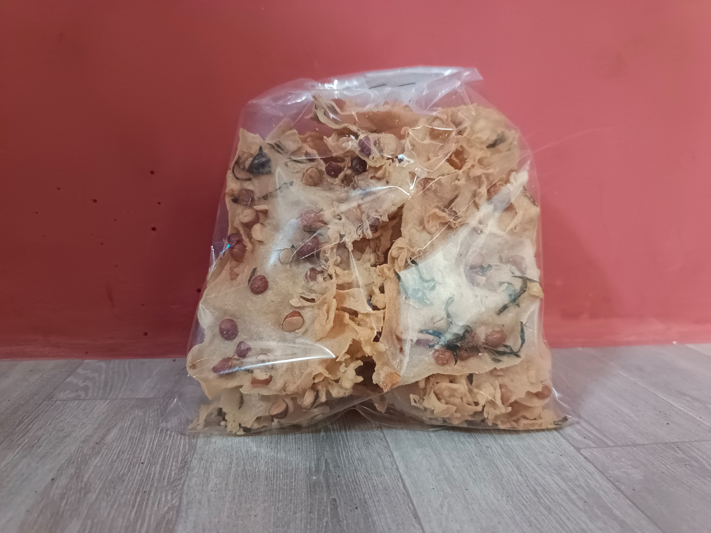
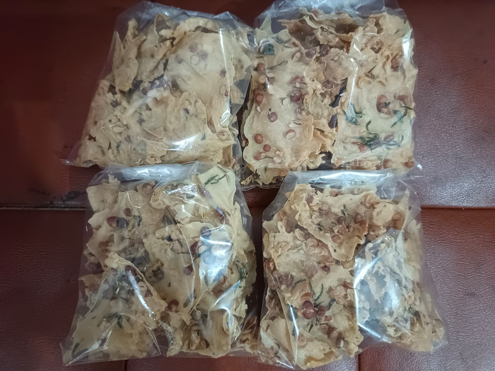

Peyek Kacang Bu Sari
Kerupuk kacang adalah salah satu camilan tradisional yang sudah melekat di hati masyarakat Indonesia. Terbuat dari adonan tipis berbahan dasar tepung berkualitas, yang dipadukan dengan kacang tanah utuh serta irisan daun seledri atau daun kucai kering, lalu digoreng hingga renyah dan garing sempurna. Setiap lembar kerupuk menawarkan cita rasa gurih khas kacang yang berpadu dengan aroma rempah alami. Cocok dinikmati kapan saja—baik sebagai pendamping nasi, lauk pauk, ataupun camilan ringan saat bersantai bersama keluarga.
Galeri Produk



Katalog Digital
Video Promo
Kupon dan Poin Loyalty
Jumlah Poin Anda: 0